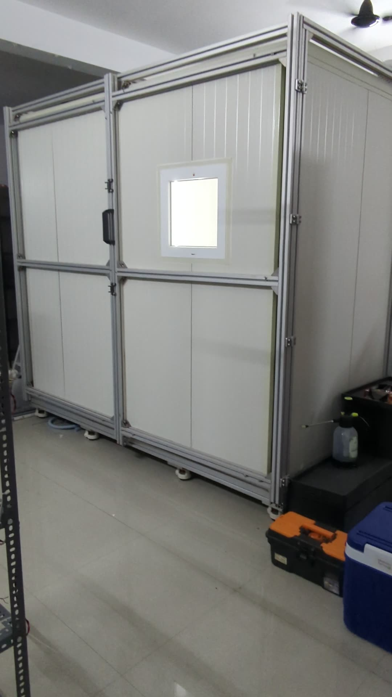
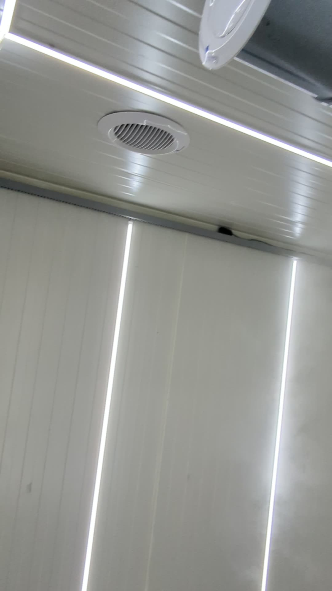
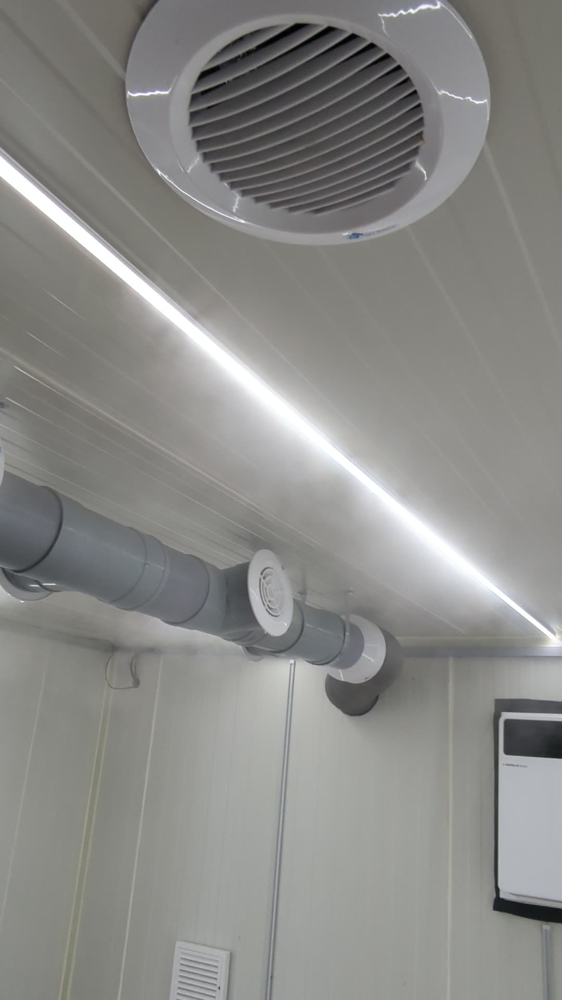

01 · Climate
Cooling that works with less.
Cooling on the roof does the easy work. The rear wall steps in only when it is needed.
The perfect harvest, with less energy.
Cooling on the roof does the easy work. The rear wall steps in only when it is needed.
Air moves evenly through every rack, so each cycle runs the same way.
POD 1.0 runs on the grid. A hybrid solar model arrives with POD 1.2.
Sterilisation uses the misting heads and UV lamps to clean the room between cycles.
Insulated panels, field assembled indoors or outdoors.
Stacked racks make full use of a 10 × 10 ft floor.
The first size is about 10 × 10 ft and 8 ft high. Larger sizes add whole panels.
Lose the internet and the POD keeps running. Lose power and it fails safe, then tells your team.
A new crop or a new variety is just an update. Extra crops come as paid crop packs, added with no hardware change.
Every POD runs on Kaani, a complete farm operating system that keeps getting better while it grows your crops.
Learn about Kaani →The first size is about 10 × 10 ft and 8 ft high. Larger sizes are planned in whole panels.
This is the first prototype we built to learn the climate system. The production POD grew from what it taught us, and looks different from this.



Tell us what you grow and where. We reply with next steps for POD 1.0 or Humidifier 1.0. Growing something else? Tell us, and let's explore it together.
Akaththi Labs
Polichalur, Chennai
Tamil Nadu 600125, India